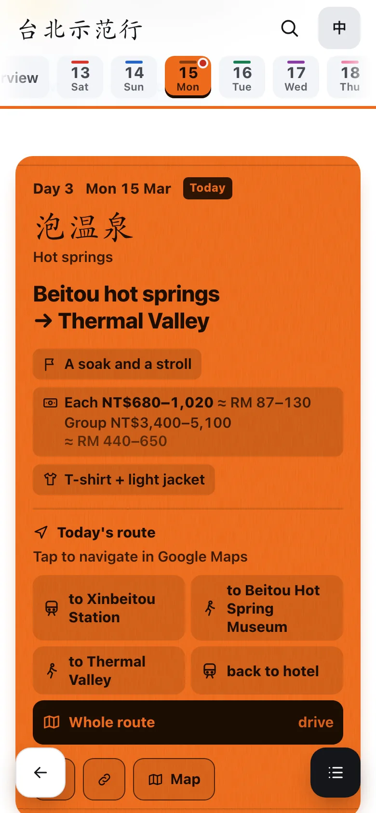
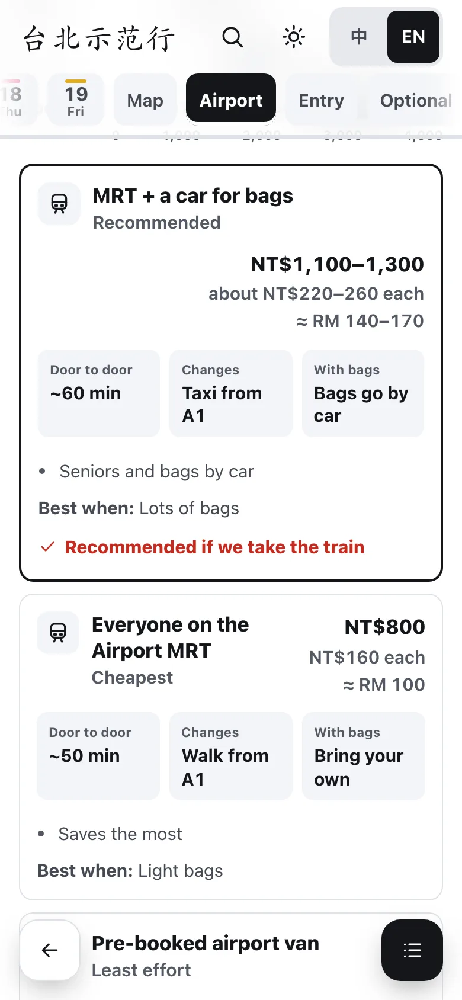

RelaxJer
relax jer: Malaysian for “just relax”
One page for your whole trip. Plan it with an AI agent, open it on every phone in the group, and it keeps working when the signal doesn’t.
Free and open source (MIT). Works with Claude Code, Codex, Cursor and Gemini CLI.


What the group gets
A real page from the demo trip, the same one the tests run on. Every name and price in it is made up.
What’s next, at a glance
Open the link and the page knows the day and the hour in the destination. Now, next, and how to get there.
Each day, one lantern
Booked times are fixed and never move. Running late? The page suggests what to drop; it never moves anything by itself.

Every cost, per person
Group totals and each person’s share, in the local currency and yours, at a rate you can change.
Also on every page: food, drinks, rest spots and toilets near each stop; a map with an offline transit planner; the airport options decided on the day; a checklist; two languages; and an install button for the home screen.
How a trip becomes a page
Each step is a skill your AI agent runs from this repo. It asks you before anything is published.

The same steps, in words, are below.
Plan a trip in four steps
-
说行程
Tell your agent about the trip
Clone the repo, open it in your AI agent, and describe the trip in your own words: dates, flights, who’s coming, which of them are seniors, the hotels, what’s booked, what you’d love to do.
git clone https://github.com/ KennethWKZ/ relaxjer cd relaxjer && corepack enable && pnpm install Your trip stays in
trips/on your computer. It’s never committed or uploaded. -
连地图
Connect Google Maps Recommended
Your own Google keys give the page live opening hours, ratings, photos and Google search, and the refresh fills in walking and transit times. About 20 minutes to set up; a family trip stays within Google’s free monthly allowance.
Follow the Google Maps guide, or skip it: the page falls back to a free map.
-
做一页
Your agent builds one page
It pulls the places and the weather, builds a single file, then checks it: the tests, and a look at a phone-sized screen in two browsers.
pnpm resync --trip trips/<your-trip> --write pnpm build --trip trips/ <your-trip> --keys ~/ .config/ relaxjer/ google.json -
发给大家
Share it with the group
Publish the page behind a password (ht-ml.app, for example) and send the link to your group chat. Everyone installs it to their home screen.
A trip page carries hotels, flights and names, so it never goes anywhere public, including this site.
Google Maps or the free map?
Both work. Google is better for a group on the move; the free map needs no setup.
| What you get | Free mapMapLibre + OpenStreetMap | Google Mapsyour own keys · recommended |
|---|---|---|
| The map | Clean, with the local community’s detail | The map your group already uses |
| Hours, ratings, photos | What’s in your plan | Live on every place |
| Search | Your trip’s places | Plus Google, when adding a stop |
| Walking and transit times | Your plan’s times | Filled in by the data refresh |
| Cost and setup | Free, nothing to set up | Free for a family trip; about 20 minutes |
The full comparison, the costs, the guardrails and Google’s terms
Made for a group with seniors
- Walking
- ×1.4 for seniors, and a taxi first for long legs
- Text
- Large, and it follows the phone’s own text size
- Buttons
- No smaller than a fingertip, even in the sun
- Offline
- The plan, costs and lists work without a signal, and the page says so
- Getting lost
- Tap a day and you’re there; Back takes you where you were
For contributors and AI agents
Any agent starts at
AGENTS.md. The skills live in .agents/skills/, and every decision, with its trade-offs, in the
memory bank. Tests define done: repo
hygiene in a second, then the page in Chromium and WebKit at phone and desktop sizes.
New to a destination? A country pack holds what matters there (tax refunds, the metro, taxi fares), and adding one is a skill too.